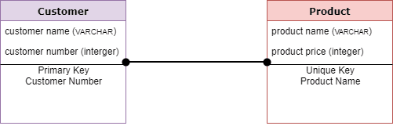

Physical Model dalam Database
-28 September 2024
Definisi
Pemodelan Data adalah proses menciptakan model data untuk data
yang akan disimpan dalam Database. Model data ini adalah representasi konseptual dari objek data asosiasi antara
objek data yang berbeda aturan.
Tujuan utama menggunakan Model Data adalah sebagai berikut :
Memastikan bahwa semua objek data yang dibutuhkan oleh Database di wakili secara akurat. Kelalaian data akan menyebabkan pembuatan laporan yang salah dan menghasilkan hasil yang salah.
Model data membantu merancang Basis Data pada tingkat Konseptual, Fisik, dan Logis.
Struktur Model Data membantu untuk menentukan tabel relasional, kunci primer dan prosedur tersimpan.
Memberikan gambaran yang jelas tentang data dasar dan dapat digunakan oleh pengembang Basis Data untuk membuat Basis Data Fisik.
Juga bermanfaat untuk mengidentifikasi data yang hilang atau berlebihan.
Jenis Model Data
Ada tiga jenis Model Data yaitu sebagai berikut :
Konseptual : Model Data ini mendefinisikan APA isi sistem. Model ini biasanya dibuat oleh pemangku kepentingan Bisnis dan Arsitek Data. Tujuannya adalah untuk mengatur, memperluas, dan mendefinisikan konsep dan aturan bisnis.
Logis : Menentukan BAGAIMANA sistem harus diimplementasikan terlepas dari DBMS. Model ini biasanya dibuat oleh Arsitek Data dan Analis Bisnis. Tujuannya adalah untuk mengembangkan peta teknis peraturan dan struktur data.
Fisik : Model Data ini menjelaskan BAGAIMANA sistem akan diimplementasikan menggunakan sistem DBMS tertentu. Model ini biasanya dibuat oleh DBA dan pengembang. Tujuannya adalah implementasi aktual dari Database.
Model Data Fisik
Model Data Fisik menjelaskan implementasi spesifik Data Model Basis Data yang menawarkan abstraksi dari Database dan membantu menghasilkan skema. Jenis Model Data ini juga membantu memvisualisasikan struktur Basis Data. Ini membantu memodelkan kunci kolom, batasan, indeks, pemicu, dan fitur RDBMS lainnya.

Model Data Fisik
Model Data Fisik menggambarkan kebutuhan data untuk satu proyek atau aplikasi meskipun mungkin diintegrasikan dengan Model Data Fisik lainnya berdasarkan ruang lingkup proyek.
Model Data berisi hubungan antara tabel yang membahas kardinalitas dan nullability dari hubungan tersebut.
Dikembangkan untuk versi tertentu dari DBMS, lokasi penyimpanan data atau teknologi yang akan digunakan dalam proyek.
Kolom harus memiliki tipe data, panjang yang ditetapkan dan nilai default yang tepat.
Kunci primer, tampilan, indeks, profil akses, dan otorisasi, serta lainnya ditentukan.